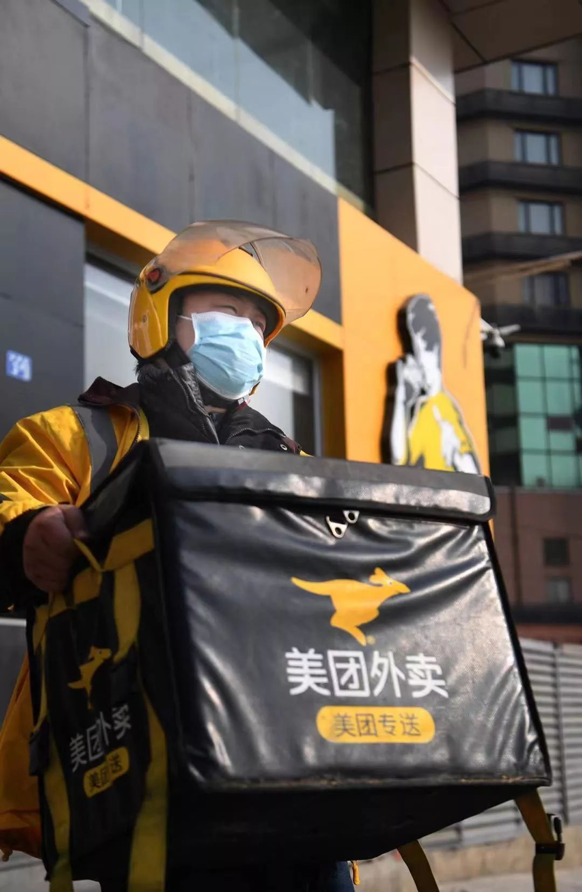
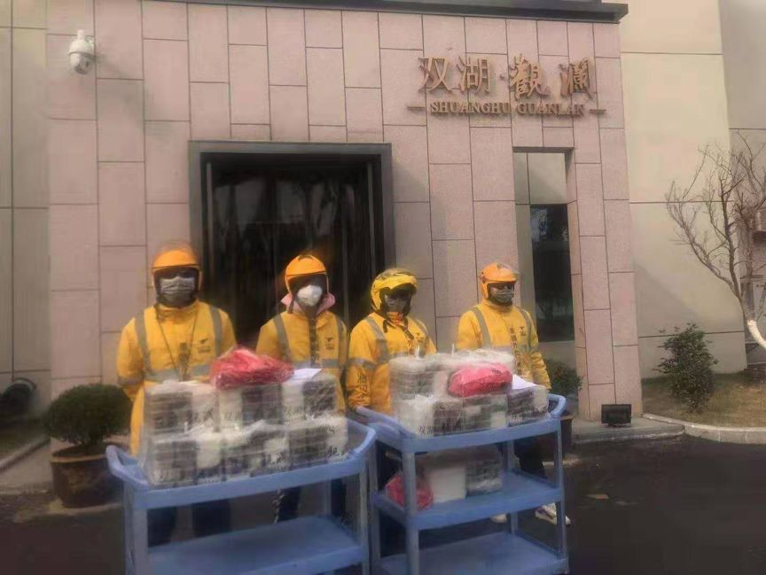
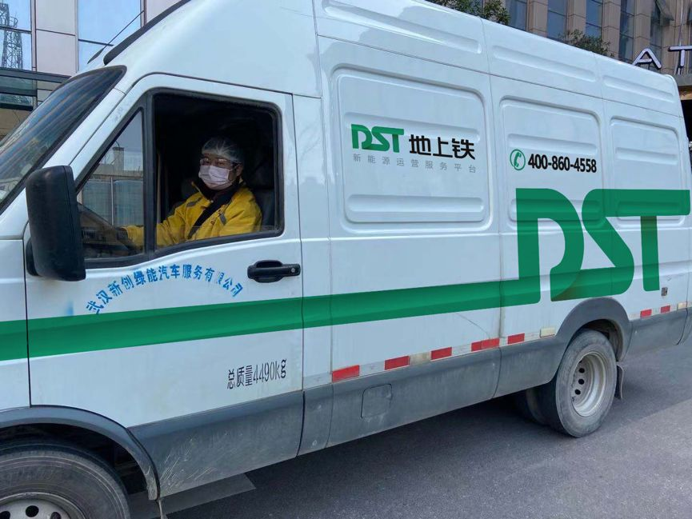

一边送餐一边拍照：我看到了最真实的武汉
原文链接 备份链接 从武汉封城之日起，三十多岁的外卖员老计一直在工作。他穿梭在江城的大街小巷，一边送餐，一边用手机记录下自己看到的一切。 空荡荡的汉街，戏台上有一只狗。沃尔玛的猪肉档人山人海，“我不敢去，也抢不过”。超市的叶子菜卖得快，去 …
“
我生活在这个城市，做了自己该做的事。

武汉封城后，这个城市从未如此空旷安静，路上少有车辆，却有一道独特的风景，就是在城市中穿梭的外卖人员。
疫情下，医护人员在一线救治病人，保障我们的生命安全；而我们这些身在武汉的人，想要为武汉出一份力，为医护人员送餐。
灾难面前，生活还要继续。每个人都在用自己的力量，守护武汉人的生活。
“想到是给医护人员做饭，浑身就有劲”
我叫刘小虎，今年36岁，是香他她煲仔饭的一名员工。19岁那年，我跟着姐姐来到武汉，开了一家中餐厅，2013年，我存了笔钱，开了自己的超市，直到去年7月份，我入驻香他她煲仔饭，成了一名店长。
今年春节，我原本就没有打算回去，腊月二十八，店里放假，伙计们都走了，店里没有多少人来吃饭，我没有关门，一个人守着店。
1月26号这天晚上九点，我接到主管的电话，他说美团正联合商家给医护人员送免费餐，得知我的店还在营业，问我愿不愿意参加这次活动。我当时想都没想，就回答说：“愿意”。
主管让我赶紧记下一些东西，他似乎这几天也一直在忙，声音有些沙哑，紧接着他说：“第一是一定要保证食品健康，第二要保证准点出餐，第三要保证味道美味。每一条都要更好。”
1月27号这天，我早早来到店里，给店里的每个角落消毒，总部也给我寄来防护服、医用酒精和口罩。准备就绪后，我穿好防护服，戴着口罩，15个锅炉全开，给医护们做煲仔饭。米和青菜，我前一天晚上就准备好了。
我们店不大，平时就四个人，一天也就能做100份煲仔饭。做一份煲仔饭大概要12分钟，每一道工序都要算好时间。我一个人在后厨待了三个小时，盯准火候，最后竟然做了120份煲仔饭。

这些天，我记录下来做的煲仔饭 | 作者供图
煲仔饭的打包不是一件容易的事，稍不注意就会烫到手，幸亏美团给我派来小哥帮忙，我们在规定的10:40前将所有煲仔饭打包好，搬到来送餐的车上。
中午歇了一个小时，就要开始做晚餐。当天晚上，我一个人做了90份煲仔饭，联系志愿者司机，顺利送到各个医院。
第二天，考虑到人手问题，有一个跟我合作默契的美团小哥在我这常驻，帮我打包，没有第一天的仓促，我们顺利出餐200份。也给司机师傅做了两份。

我穿着防护服在厨房做餐 | 作者供图
从初三到现在，我一直在给医护们做煲仔饭。虽然我和他们素不相识，也没有见面，但他们能吃到我做的饭，就像我们是站在一起的，我们的心连在一起。
这些天，我一直都睡不好，觉得有个事压在自己身上，担心不能按量完成，但我还是想对医护人员说，他们在前线救治病人，我们在后方保障他们的生活。说实在的，累是的确很累，可一想到医护人员还在一线战斗，又充满了干劲。
这几天，我搬到店里来住，我住的那个小区也出现感染情况了，我每天都会严格给店里和自己消毒。
在我店里常驻的那个美团外卖小哥，他也挺辛苦的，虽然我们才认识没多少天，经过这些天的相处，倒是成为了像认识了好多年的朋友。
等疫情结束后，我想做的还是继续给大家做煲仔饭。我觉得武汉这次一定能挺过去。我来武汉快二十年了，也算是半个武汉人，我爱这个城市。
“我没有多想，就是觉得能帮点小忙”
我叫马智勇，今年43岁，是土生土长的武汉人，也是一名美团专送骑手。
我是在19年10月份加入美团的，疫情爆发前，我的配送范围离华南海鲜市场很近，一天基本上能送40到50单。
我上的是夜班，早上十点半开工，到中午两点，回家休息，我家就住在汉口火车站附近。从5点到8点，是吃饭的高峰期，8点到9点，是我们吃饭的时间，再从9点开始上班，每天忙完都要到零点。一天来回跑，要跑两百公里。
我们这块刚被封的时候，我没感觉到什么变化，等后知后觉，我们这块成了重灾区，疫情也一点一点地扩散开，考虑到骑手和用户的安全，为了降低交叉感染的风险，公司直接暂停了附近医院订单的配送。
封城之后，附近的商家都关门了，我也就没有单子可送。直到大年初二，有一家药店开门，但单量也不多，一天也就能送四五单，后来单量多了，我们七个兄弟，每个人一天也能跑七八单。
因为时间充裕，1月27号这天，我以志愿者的身份加入到美团给医护人员送免费专餐的活动。我老婆一开始有些顾虑，封城之后，她和孩子在家，一直没出门。我就劝她，这个送餐的事，总得有人要做。再说我们看前线医护人员的报道，他们实在是太辛苦了。我们能尽一份力，肯定要尽一份力。
每天送完餐回家，我跟老婆孩子都分房睡，他们睡一间房，我睡一间房。送餐到现在，家里还是挺支持我的。
跟我一起的还有两个兄弟参加了这个活动，我们仨一起，去真功夫帮忙打包，第一天去的时候，我们只戴着口罩，没有防护服，真功夫出于保障备餐区域清洁的考虑，让我们在店外面帮忙搬餐。
中午搬了几百份，下午搬了几百份。再由专车送到医院。

给真功夫帮忙打包搬餐 | 作者供图
这段时间在外面跑，我们几乎接触不到人，武汉现在基本上都是一些送外卖的人和一些志愿者司机在跑。虽然疫情严重，可身边还是有很多兄弟在外面送餐，有时在路上骑着车，迎面而过，相互点头致意，心里就觉得很感动。
武汉的街上现在空荡荡的，我只希望武汉能够挺过这次，以后能好好发展。
我在武汉生活四十多年，从没见过这样的武汉。那天武汉市民一起唱歌喊楼，我也喊了，喊得很大声。以前那么难都能过去，这一次肯定也能挺过去的。
“我的骑士们都在武汉，我也必须在”
我叫刘俊平，今年35岁，这些天一直在忙着带骑手们给医护人员送餐。
2017年下半年，我加入美团，成为一名骑手。我很爱这份工作，说实在的，骑手的工作很辛苦，风吹雨淋的，但一分耕耘一分收获，由于表现优异，到了2019年，我当骑手一年多后，晋升为一名站长，负责武昌火车站站点，手下管理着60名骑手。美团的女骑手本身就少，女站长就更少了。
我老家在湖北孝感，离武汉只有一个小时的车程，本来我春节前的打算，是回家和家人团聚，家里有一个10岁的女儿在等着我。
疫情爆发后，武汉还没封城前，我就决定留下来，我底下有很多骑手都自愿留在武汉，他们大多都是90后，既然他们在，我肯定是要留下来陪着他们。
每天，我们的骑手到了站点，第一件事，我就给他们测量体温。这个时候，我们外卖人员自身的防护是非常重要的，因为这个城市还需要运转，而我们每个人都需要穿梭其中。测量完体温，询问他们的身体状况，才放心让他们出发。
这个春节和往年的春节很不一样，订单量并不多，我的工作没有平时繁忙。于是在工作间隙，我加入了一个武汉本地司机自发组织的爱心车队，闲暇时间就帮忙接送一些上下班的医护人员，或者帮着运送一些口罩、药品等物资。
1月27日，大年初三，我接到消息，美团启动了武汉医护紧急专供餐行动，联合商家为医护人员免费提供餐品。由于这次行动需要大批司机，美团面向内部招募志愿司机。这对我来说，是一个可以出力的机会。
我当时想都没想，第一个报了名。接下来的几天，我开着车奔跑在空旷的武汉街头，为医护人员送餐，我开车很稳，那些餐在后备箱里，我需要保证它们不被洒出来，更要保证这些餐能够准点送到医护人员的手里。
那几天，我还主动联络武昌火车站附近的餐饮商户，沟通为旁边的武汉大学人民医院免费送餐。一些爱心商户也纷纷加入，我就带领骑手骑着电动车，每天义务为武汉大学人民医院送餐。

我带着三名骑手为医院送餐 | 作者供图
一切联系妥当后，2月3日那天，我带着三名骑手，一共将170份餐送到此次疫情的重点医疗机构——武汉大学人民医院（湖北省人民医院）。看着医护人员取餐离开的背影，不知怎的，我一下子眼眶就湿了。他们实在是太辛苦了。
虽然大家都说医院是重灾区，很多人不敢去，但我不怕，站里有给我们每个骑手配备口罩和防护服。医生们那么辛苦，我们必须尽全力给他们最大的支持。
这些事总要有人做，我生活在这个城市，也只做了自己该做的事。不过，这事我还是不敢告诉家人，怕他们为我担心。
对于女儿，我心里还是感到亏欠。女儿经常给我打电话，问我什么时候能回去，我只能说：等过段时间，妈妈就能回去啦。
“疫情刻不容缓，没那么多时间走流程”
我叫曹勇，今年30岁，是地上铁租车公司中东大区营销总经理助理。
我是在2011年加入地上铁租车公司，主要负责湖北这边的销售工作。销售这个工作很累，日常要处理的事情很多，所以这个春节，我原本打算回老家好好休息一下。
我们公司1月20号放假，当天我开车回了老家湖北京山，路上和从前的春节也没什么区别。刚回老家时，周边对于武汉的这次疫情了解得非常少。
直到1月23号，武汉发布封城通知，我们当地人才意识到这次疫情的严重性。在武汉封城的第二天，武汉周边的县城也开始纷纷封镇封村。
想到自己当时开车回来，也没有太多防范意识，还是心有余悸。
那些天，我一直关注着武汉的消息。我们公司也在配合政府部门，给武汉的市民提供用车服务。紧接着，武汉发布机动车限行，那些医护的出行面临着一个难题，我们随即作出响应，发起“免费用车”的服务，配合武汉政府提供用车，供在武汉的志愿者司机开送，用来接送医护人员上下班。
解决了出行的问题，又面临着一些市民的吃饭问题。特别是在一线的医护人员，看着他们吃泡面的场景，我感到无比心疼。
到了1月29号，我们接到美团的消息，说是美团这次联合各商家给医护人送免费餐，需要用车，我们内部当天晚上紧急开会，原本要按照章程走，但时间紧迫，最后省去了所有流程，提供了6辆车，免费供美团使用。
确定了用车，美团那边联系外卖小哥和志愿者去提车，第二天，也就是1月30号，那些外卖小哥将车开到美团联系到的商家门口，再将餐送到各个医院。

外卖小哥来开车去送餐 | 作者供图
说实在的，我在武汉生活十多年，也定居在武汉，这次没能现场去帮忙，但我很佩服那些美团的小哥。别人不敢做的事情，他们敢做。武汉这个时候非常需要这些人，人们都不敢出门，需要什么，外卖小哥就会送给他们。
武汉人民需要用车，我们有车，理所应当出一份力。我也特别支持美团这次发起的活动，有人做饭，有人送餐，我们给车，每一个环节，都是为了能够让医护人员的生活有所保障。
我们也是为了让在武汉的市民看到，这个繁荣的城市，路上还有车在跑，我们的武汉并非是一座空城，而是一个有生气的城市。
这次疫情，最后一道防线是咱们的医护人员，都挺不容易的。老百姓需要他们，但他们也需要保护好自己。我们武汉的企业，能尽一份力都应尽一份力。
美团骑手都是好样。医护工作者都是好样的。武汉一定能挺过去。
撰文 | 李泽
编辑 | 蒲末释
▼
全民故事计划正在寻找每一个有故事的人
讲出你在乎的故事，投递给
tougao@quanmingushi.com
故事一经发布，即奉上千字300元-1000元的稿酬

请您支持一下全民故事计划，点击在看
原文链接 备份链接 从武汉封城之日起，三十多岁的外卖员老计一直在工作。他穿梭在江城的大街小巷，一边送餐，一边用手机记录下自己看到的一切。 空荡荡的汉街，戏台上有一只狗。沃尔玛的猪肉档人山人海，“我不敢去，也抢不过”。超市的叶子菜卖得快，去 …
原文链接 备份链接 一 我叫李丰杰，我在武汉送外卖。 我本来想过年留在武汉值班跑单，但是腊月二十九那天早上一出门，我妈就一直给我打电话，每隔十分钟或者半个小时就打一次，强烈要求我回家，说武汉出现了新型冠状病毒，再不回来就回不来了。搞得我没 …
原文链接 备份链接 除夕前夜，因疫情蔓延，武汉宣布封城，机场、火车站、市内公共交通停闭，江城困围。封城以来，许多武汉人都承受着分离的苦楚，担心年迈独居的父母买不到菜，惋惜爱人最需要的时却不能陪在身边，常年在外工作的父亲错过仅有的看望孩子的 …
原文链接 备份链接 突发的疫情搅乱了这个春节。武汉封城后，居民被迫留在家中、医护人员无法离开工作岗位，吃饭成了问题。与此同时，餐饮、休闲、商超便利等生活服务业也面临巨大考验。 作为居民和商家的连接点，一群隶属于本地生活服务平台的留守外卖 …
原文链接 备份链接 《创新经济战疫计划》，是燃财经在新型肺炎疫情期间推出的特别栏目，关注创新经济企业遇到的新难题、商讨应该采取的新对策，希望能够帮助中小企业一起战胜挑战、把握机会。本文是第7期。查看前6篇请点击《哪些行业正在逆势爆 …